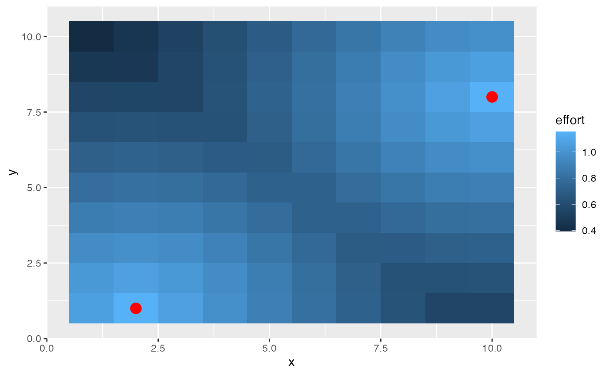

A wide range of fleet allocation models are available in the
literature and in marlin. When the
spatial_allocation option of create_fleet is
set to profit or ppue (profit per unit
effort), you can also specify a series of port locations for each fleet,
as well as a cost-per-unit-distance. This will create an underlying
“cost per patch” of fishing, which is then multiplied by the total
amount of effort in each patch in calculating total profits or profit
per unit effort.
The net result of this is that you can simulate scenarios where the fishing fleet prefers to stay closer to port all else being equal, resulting in the fleet staying in more depleted fishing grounds near port over more productive but costly patches offshore.
First, let’s set up port locations. Every fleet can have ports in as many cells as you’d like, and every fleet can have different ports. Let’s set up a 10x10 system, with two ports, with their locations specified by x and y coordinates.
library(marlin)
library(ggplot2)
resolution <- c(10,10)
patches <- prod(resolution)
years <- 20
ports <- data.frame(x = c(2,10), y = c(1,8))Now we’ll create a population of bigeye tuna.
fauna <-
list(
"bigeye" = create_critter(
scientific_name = "thunnus obesus",
init_explt = .2,
explt_type = "f",
resolution = resolution
)
)We’ll then create a fishing fleet with the desired port locations.
fleets <- list(
"longline" = create_fleet(
list("bigeye" = Metier$new(
critter = fauna$bigeye,
price = 1,
sel_form = "logistic",
sel_start = 1,
sel_delta = .01,
catchability = 1e-3,
p_explt = 1
)
),
ports = ports,
base_effort = prod(resolution),
resolution = resolution,
spatial_allocation = "ppue",
cost_per_unit_effort = 1,
cost_per_distance = 10,
fleet_model = "open access"
)
)
fleets <- tune_fleets(fauna, fleets, tune_costs = TRUE)
fleets$longline$cost_per_unit_effort
#> [1] 2.180895From there, run simulation and see how the fleet concentrates around the ports.
port_sim <- simmar(fauna = fauna,
fleets = fleets,
years = years)
process_sim <- process_marlin(port_sim)
plot_marlin(
process_sim,
plot_var = "ssb",
plot_type = "space")
#> Warning in plot_marlin(process_sim, plot_var = "ssb", plot_type = "space"): Can
#> only plot one time step for spatial plots, defaulting to last of the supplied
#> steps
patch_effort <- tidyr::expand_grid(x = 1:fauna[[1]]$resolution[1], y = 1:fauna[[1]]$resolution[2]) %>%
dplyr::mutate(effort = port_sim[[length(port_sim)]]$bigeye$e_p_fl$longline )
patch_effort %>%
ggplot() +
geom_tile(aes(x,y, fill = effort)) +
geom_point(data = ports, aes(x = x, y = y), color = "red", size = 4)
Note that this behavior is still quite basic. Distance is calculated
as the euclidean distance between patches, and at this time does not
support say having to travel around islands or the like.
marlin also assumes that travel costs are just a linear
function of distance.